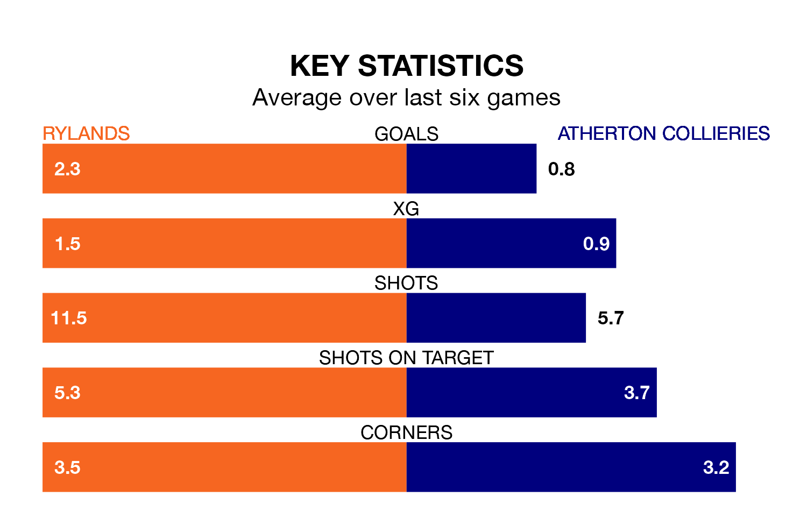

Mid-season relegation candidates Atherton Collieries face a challenge away against high-flying Rylands on Saturday.
Atherton Collieries are rooted to the bottom of the Northern Premier League table, and have picked up three wins and two draws in their 21 games to date.
Rylands, meanwhile, are second in the standings with 42 points, having won 12 and drawn six of their first 20 matches, and are three points behind table-toppers Radcliffe Borough.
Rylands are in good form in Northern Premier League, with four wins and a draw from their last six games.
With a win and five losses over that period, Atherton Collieries' form is much worse – they have taken three points from 18, compared to the home side's 13.
With 20 goals in 21 games so far this season, the visitors are the league's second-lowest scorers with 1.0 goals per game. And they are conceding more than average, letting in 54 goals at a rate of 2.6 per game.
Rylands, meanwhile, are above average scorers, with 1.8 goals per game, compared to a league average of 1.7. They have conceded 0.9 goals per game.
Rylands's last match was on December 16, a 3-2 win against Radcliffe Borough.
Atherton Collieries lost 5-0 against Marine last time out, on Tuesday.
Updated: 15:16, 21/12/23